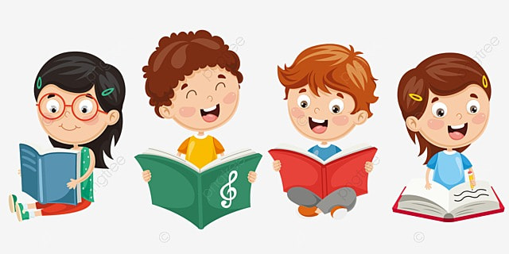
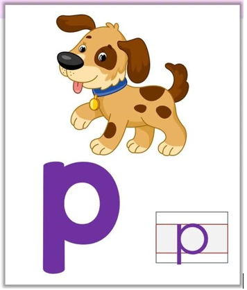

Sección de Inicio
Bienvenido a Leer es Reír. Aquí encontrarás actividades curiosas y divertidas.
imagenes>
Primer nivel
En este primer nivel te presentamos las 5 vocales, a través de imágenes que conducen a un video dinámico y divertido.
imagenes>

Selecciona la vocal deseada.

Selecciona la vocal deseada.

Selecciona la vocal deseada.

Selecciona la vocal deseada.

Segundo Nivel
-
Palabras con la letra A, a
Palabras con la vocal E, e
Palabras con la vocal U, u
NIVEL 3
En esta sección continuaremos con el aprendizaje de nuevas silabas y palabras

Continuaremos con Actividades con la letra P
Continuaremos con Actividades - Sopa de Letras